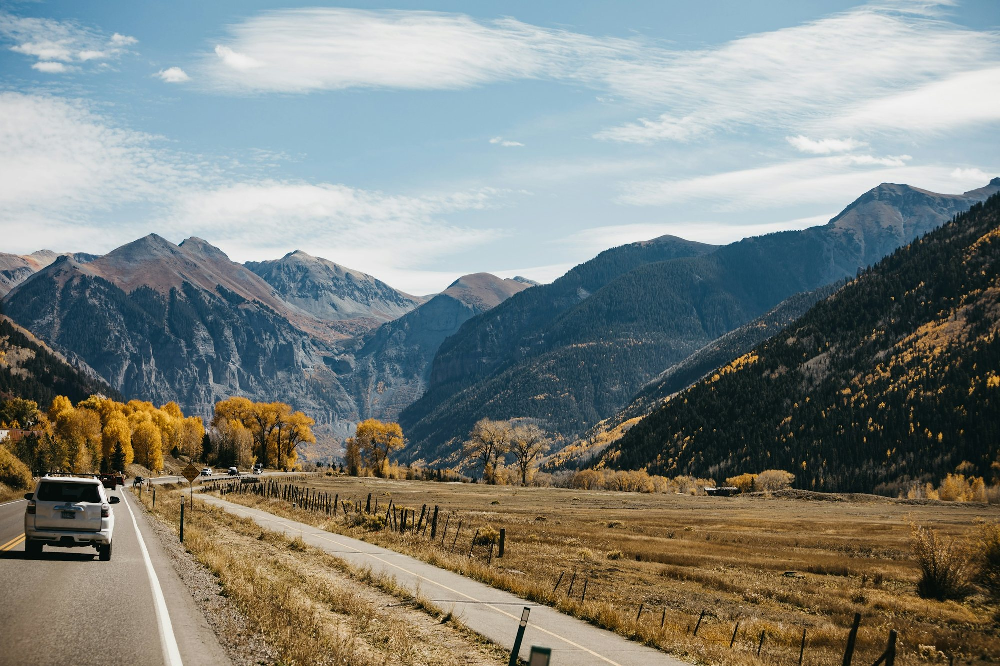
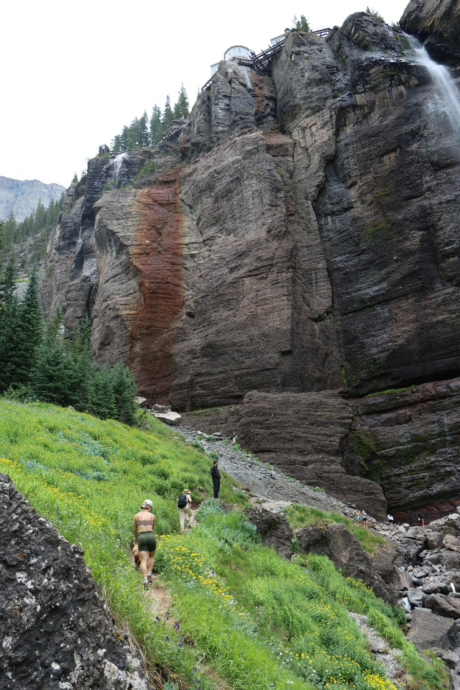
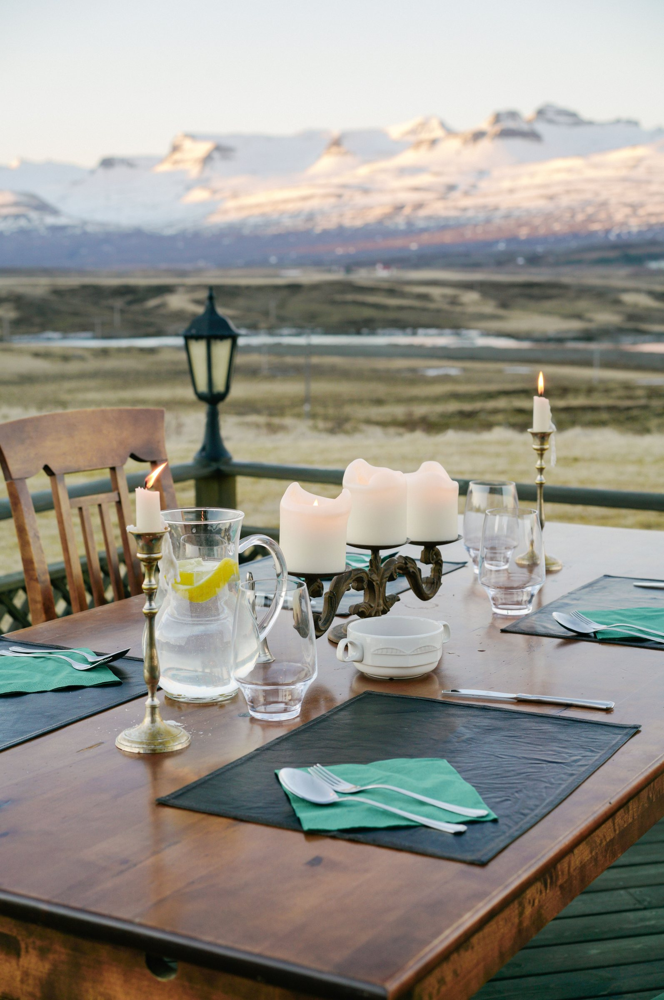
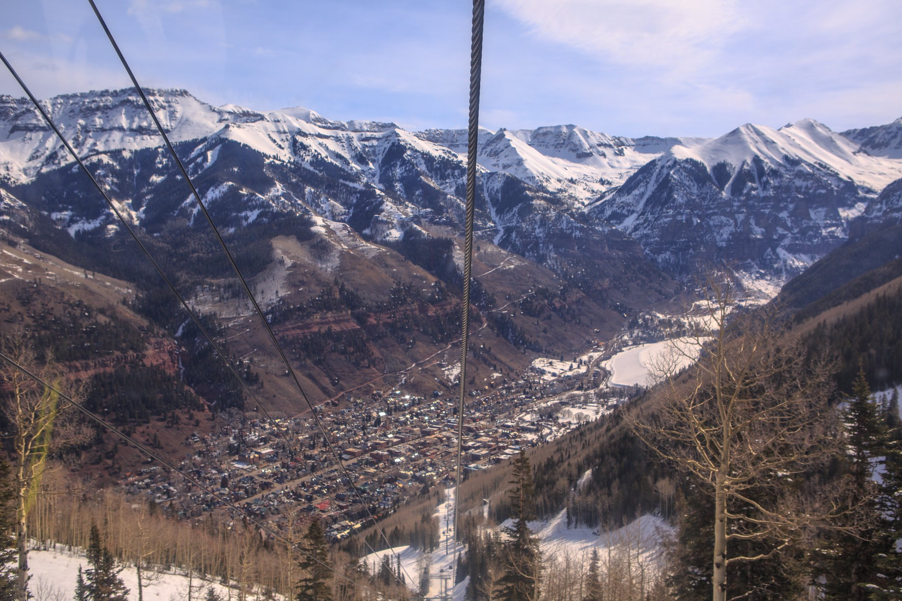
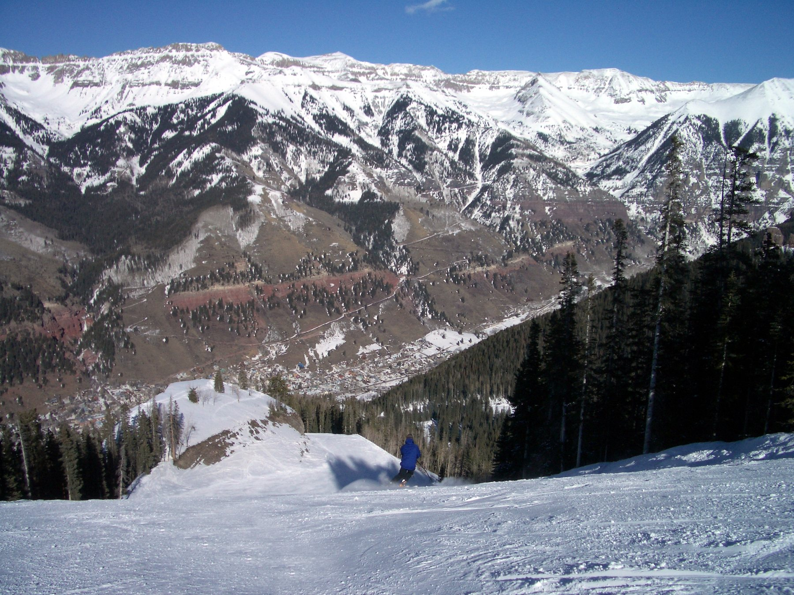
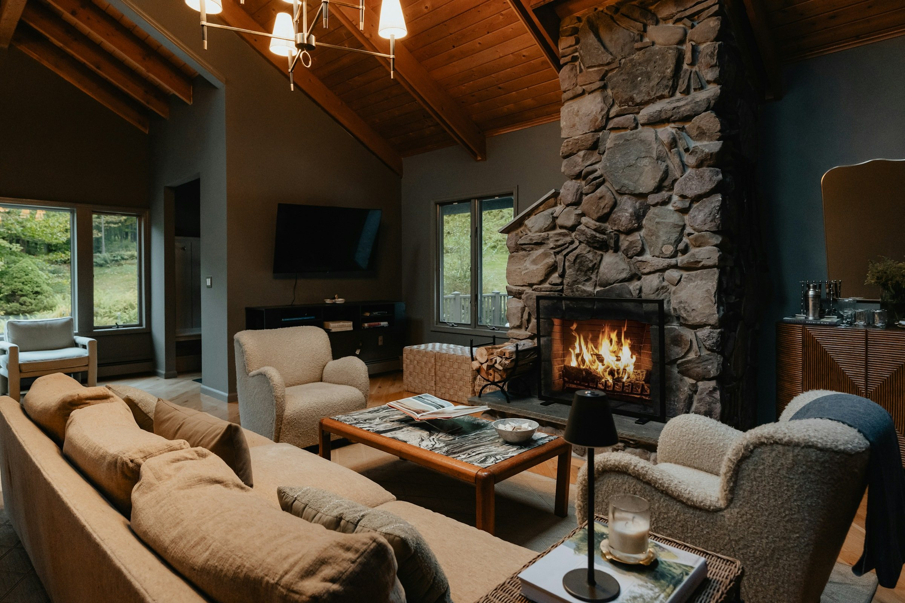
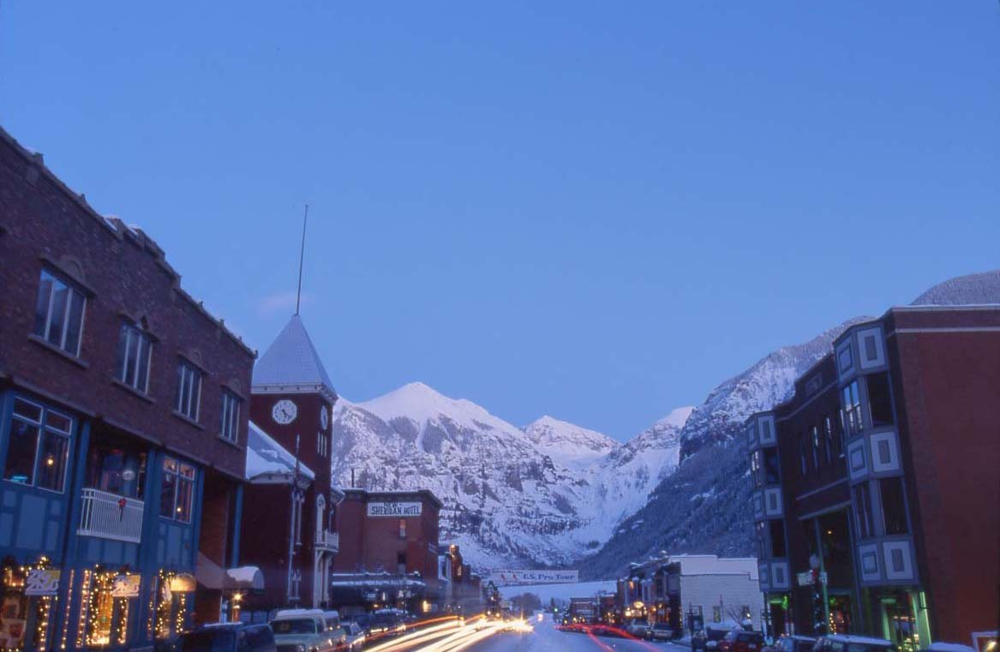

For buyers who live elsewhere
Buying a Home in Telluride From Out of State
Eight steps from your first call to the closing, written for buyers who live somewhere else, as most of Garrett's clients do.
Before the first trip
Buying a home in Telluride starts before you fly
When you live elsewhere, buying here is mostly work done from home: calls, documents, inspections you do not need to attend and signatures sent from wherever you are. The time on the ground is short, so it should be well spent.
The eight steps below run in the order a purchase does. If you want to build, read the section on land and building sites after them. If you are still deciding between the town, the Village and the mesas, the questions at the end start there.

Step 1 of 8
Start with a call and a saved search
Tell Garrett how you plan to use the place: ski weeks, whole summers, renting it out while you are away, or building. That narrows the map faster than any filter. Save a search on the home search and new listings come straight to your inbox; Garrett tells you which ones deserve a closer look.

Step 2 of 8
Stay where you might buy
Spend the first trip in the part of the valley you are weighing. A week in a condo in town is a different life from a week on a mesa. Garrett can find and negotiate a vacation rental in the right area and help with the rest of the trip through his concierge service. If you can, come back in another season: the same street feels different in March and in July.

Step 3 of 8
Tour the town, the Village and the mesas
On the ground, Garrett shows you how the areas differ: the historic grid of the Town of Telluride, the ski-in/ski-out homes and condos of Mountain Village, and the larger homesites on mesas such as Deep Creek and Turkey Creek. Drive the roads you would drive in winter, stand on the lots at the time of day you would use them, and ride the free gondola between the two towns.

Step 4 of 8
Line up the money before you fly
If you are financing, get pre-approved before the trip so you can write an offer while you are here; if you are paying cash, have proof of funds ready. Lenders review the property as well as the buyer, so if you are looking at condos, ask early about the specific building. Garrett can introduce lenders he has worked with in the valley.
Step 5 of 8
Write the offer from wherever you are
Colorado uses a state-approved contract with a deadline for each part of the purchase: the title review, the inspection, the HOA documents, the appraisal and the loan. Garrett explains each date before you sign and negotiates the price and terms, and you can sign electronically. The earnest money usually goes to the title company; before you wire it, confirm the instructions by phone at a number you already have, never one from an email.

Step 6 of 8
Inspect and read everything
You do not need to be here for the inspection: Garrett or Jessica can meet the inspector, and you get the report and a call to go through it. Read the HOA documents (the budget, the rules, and what they say about rentals and pets), the title commitment and the covenants recorded against the property. On a mesa, add the checks in the land section below: water, septic and the road.

Step 7 of 8
Plan how you will own it
Decide who looks after the place when you are not here: a property manager or caretaker, snow removal and insurance. If you plan to rent it out, check the rules before you count on the income. The Town of Telluride and the Town of Mountain Village each license short-term rentals, San Miguel County permits them outside the towns, HOAs and covenants can add their own limits, and the rules change. Ask Garrett what applies to the specific property.

Step 8 of 8
Close from wherever you are
Ask the title company early if you can sign the closing documents where you live, and confirm any wire instructions by phone again. Once the deed is recorded with the county, the place is yours. For one couple who bought land, Garrett kept going after the closing and helped them find architects and builders.
Land and building sites
Telluride land for sale: five checks before an offer
Every parcel is different, and the differences decide what you can build and what it costs to live there. Check these five things before you make an offer on land.
Water
Find out where the water comes from: a well, a shared well or a water provider. Look up an existing well permit with the Colorado Division of Water Resources; the permit file shows what the well may be used for. A new well needs a permit of its own.
Septic
If the parcel is not on a sewer system, it needs a permitted septic system. San Miguel County handles septic permits and keeps septic records through its Environmental Health department. Ask the seller for the records and for a report from a certified septic inspection.
Road access and winter
Ask who maintains the road and who plows it. The county's Road and Bridge department looks after county roads, not private ones, so a subdivision road may fall to an HOA or the owners. See the access in winter before you buy.
Covenants
Read the recorded covenants and any design guidelines before you plan a house: they can limit size, height, materials and use. The title commitment lists the covenants recorded against the parcel, and the county Clerk and Recorder holds the documents.
County land use review
Building outside the towns starts with a development permit from the county Planning Department, then a building permit. Inside the towns, the Town of Telluride's Historic and Architectural Review Commission and Mountain Village's design review apply.
Questions
What buyers ask
Do I need to be in Telluride to buy?
Plan to be here at least once, to see the property and the area around it. After that, most of the work can happen from home: the inspection, the documents, electronic signatures and, if the title company allows it, the closing.
Should I buy in town, in Mountain Village or on a mesa?
It depends on how you will use the place. The Town of Telluride is walkable and historic, Mountain Village puts the lifts and the gondola close at hand, and the mesas trade a drive for land, privacy and long views. Each area page covers what is there and what to check.
How many trips should I plan?
As many as it takes to be sure of the area. If you can, come once to compare the town, the Village and the mesas, and again to see your short list, ideally in a different season.
Can I rent the property out when I am not using it?
Check before you buy. Both towns license short-term rentals, the county permits them outside the towns, and HOAs and covenants can add limits of their own. The rules change, so ask Garrett what applies to the specific property.
What should I check on a mesa parcel?
Water, septic, the road and who plows it, the recorded covenants and the county's land use review. The land section links the official source for each.
How is a buyer's agent paid?
Before you tour homes together, you sign a written agreement with Garrett that spells out his services and how he is paid. Sometimes the seller covers some or all of it, and Garrett explains your options before you sign. The Colorado Division of Real Estate describes the agreement in its guide to buying a home.

Selling first
Have a place to sell before you buy?
If you own now, the timing of the sale shapes the purchase.
The Seller's Guide covers pricing, the documents buyers ask for and showings while you are away. For a quick number on what you own, start with the instant estimate.
Resources
Official sources for buyers
- The home buying process in ColoradoThe Division of Real Estate on buyer agreements, contracts, earnest money, inspections and closing
- Colorado contracts and formsThe state-approved purchase contract and the seller's disclosures
- Buying in an HOAThe Division of Real Estate on what to read before you buy into an association
- Well permitsColorado Division of Water Resources: look up an existing well or apply for a new one
- San Miguel County PlanningLand use review, development permits and short-term rental permits outside the towns
- Real estate scams and fraudThe Division of Real Estate on wire fraud and other scams
Contact
Start with a call before the first trip
Tell Garrett how you plan to use the place and when you can come out. Call or text 970-708-1155, or send a note through the contact page.